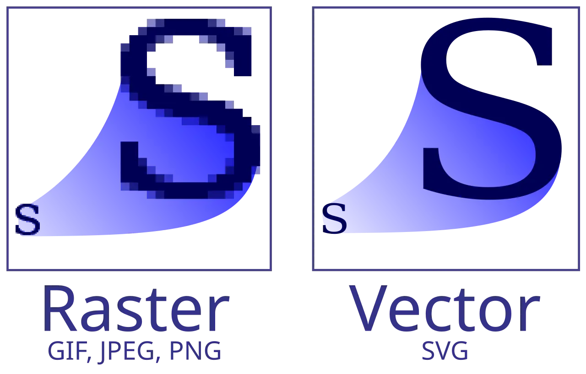

短答
SVG 是形状的绘制，因此图可以缩放，而不会出现拉大的光栅图那种方块边缘。
图把同一个标记放了两次。左边是光栅图，能看见方块边缘。右边是 SVG，保持平滑。这是技术差异。它不是排名差异，也不意味着每张照片都应该变成 SVG。照片仍然是光栅图。必须保持清晰的图、简单标记和图标，才是通常的 SVG 情况。
定义
有信息量的图需要一个获取能读到的名称。内联 SVG 可以包含 title 元素，指向 SVG 文件的 img 需要 alt，和 PNG 一样。如果一张图里才有规格的唯一副本，旁边没有 HTML 表格，这次文本获取就看不见该规格。用 SVG 做图，用 HTML 写句子和数字。装饰性 SVG 可以使用空的 alt。
页面基础里包括什么
用 SVG 做清晰的图，并把事实留在 HTML 里，同时给图一个文字替代。
设置宽高，以免 SVG 加载时移动布局。不要用路径拼出产品名，却把 H1 留空。如果内联 SVG 非常大，它就会成为文档体积的一部分。由 img 引用的文件可以单独缓存。图中并排的标记是边缘的对照，不是要粘贴的标志。

要检查什么
- 需要清晰边缘的图考虑用 SVG
- 有信息量的 SVG 有 alt 或 title
- 数值也存在于 HTML 中
- 设置了宽高
- 检查过一张图的 URL 或内联 SVG，并对照它的表格
一个结构示例
一条压力曲线只存在于会发糊的 PNG 里，数值不在 HTML 中。修复是把曲线重画成 SVG，alt 说明曲线是什么，并把数值放进表格。图中的字母形态没有被复用。表格才是一次获取所读到的内容。
它不声称什么
SVG 不保证排名或引用。
Mika Visibility 把它归到哪里
Mika Visibility 把标题、标题层级、语言和媒体基础归在 SEO 健康的内容与结构检查里。它们帮助页面被理解。它们不是 SEO 增长——增长问的是还缺什么覆盖——它们也不保证回答产品会引用这个页面。
这一对标记把光栅边缘和矢量边缘放在一起。它是对照，不是品牌素材。
常见问题
为什么 SVG 能保持清晰？
SVG 是形状的绘制，因此图可以缩放，而不会出现拉大的光栅图那种方块边缘。
什么仍然应该在 HTML 里？
用 SVG 做清晰的图，并把事实留在 HTML 里，同时给图一个文字替代。
SVG 能保证排名吗？
SVG 不保证排名或引用。
下一步
做一次结构化的 SEO + GEO 审计，查看健康发现、增长缺口和可以执行的蓝图。
更清晰的实体、答案、证据和上下文，会让页面更容易被理解与引用。任何回答产品中的结果都不作保证。